Casino Kitchen레스토랑 · 카지노 조리부
세븐럭 카지노
무역점 조리부한식·일식·중식·양식을 오가며 많은 양을 같은 품질로 내는 주방에서 일했습니다.
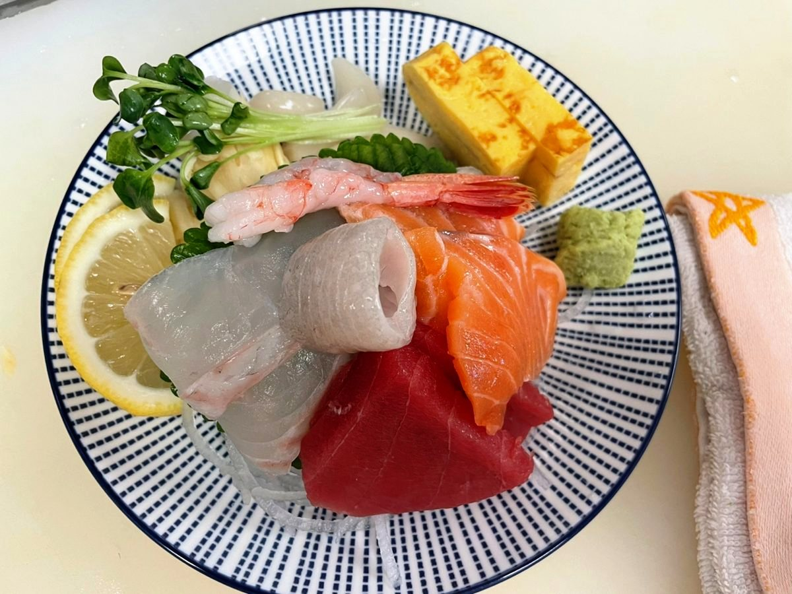
MXJ의 컨설팅과 메뉴 개발은 책상 위가 아니라 주방에서 시작합니다. 카지노 조리부부터 미쉐린 빕구르망 냉면집, 백화점 델리와 뷔페까지 — 20년 동안 현장에서 몸으로 익힌 기준으로 사장님 가게를 봅니다.
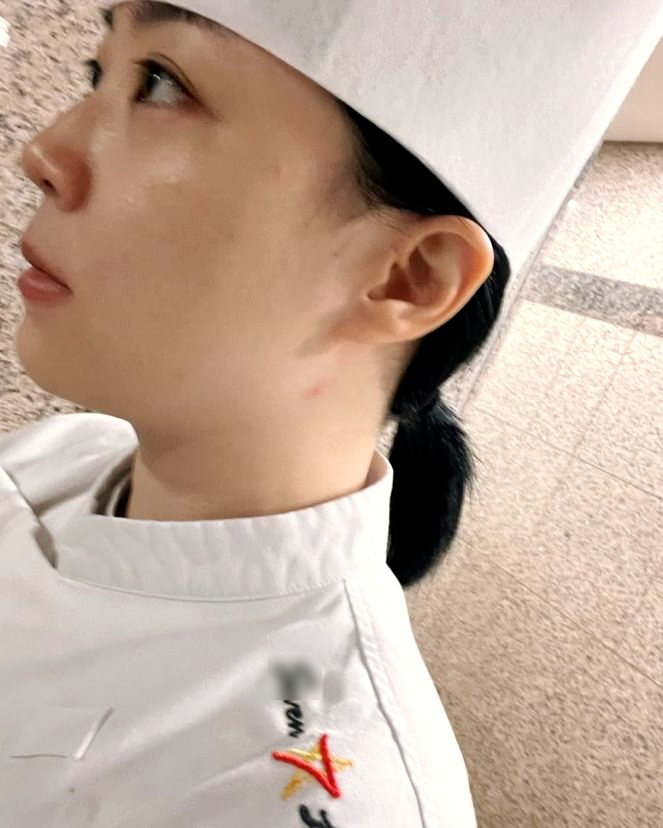
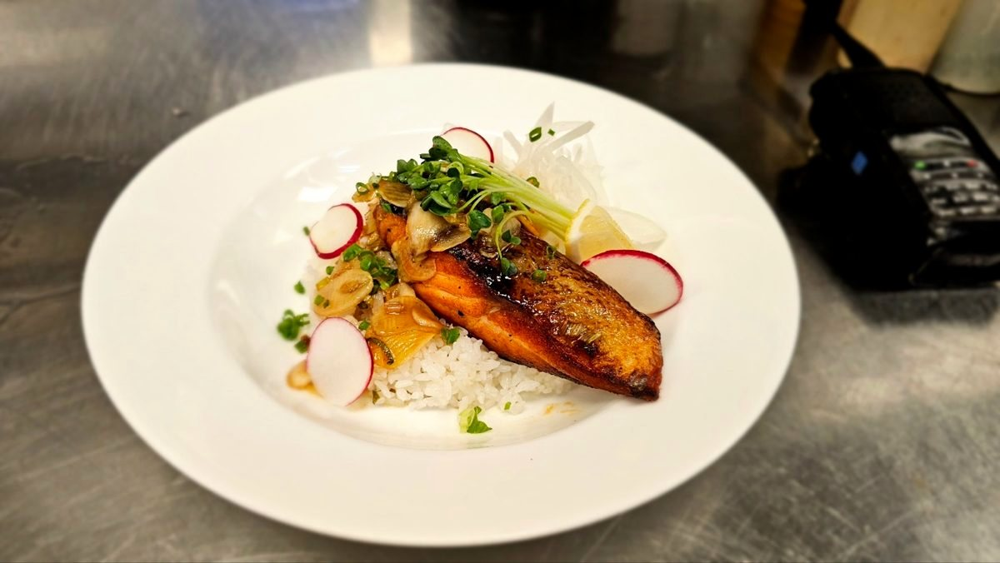
20대부터 자영업과 사업을 해 왔고, MXJ는 네 번째 사업입니다. 카지노 조리부와 뷔페·델리 주방, 미쉐린 빕구르망 평양냉면 주방을 거쳤고, 브랜드 ‘방카’에서는 메뉴 디렉팅과 조리를 맡았습니다.
그래서 MXJ는 말로 끝나는 대행사가 아니라 직접 실행하는 시행사입니다. 매장에 방문해 문제를 찾고, 메뉴를 만들고, 맛을 맞추는 일까지 현장을 아는 사람이 직접 합니다.
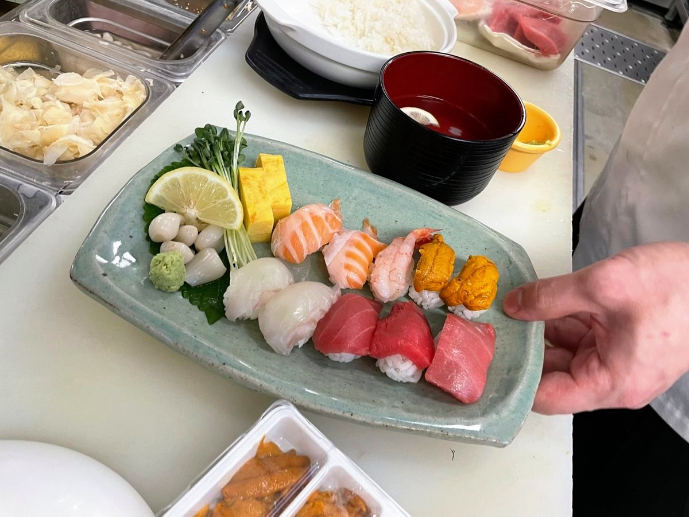
현장에서 증명한 시간
한식·일식·중식·양식을 오가며 많은 양을 같은 품질로 내는 주방에서 일했습니다.

샐러드 바와 콜드 디스플레이를 책임졌습니다. 많은 메뉴를 한꺼번에 굴리는 동선과 진열, 원가 감각을 익혔습니다.
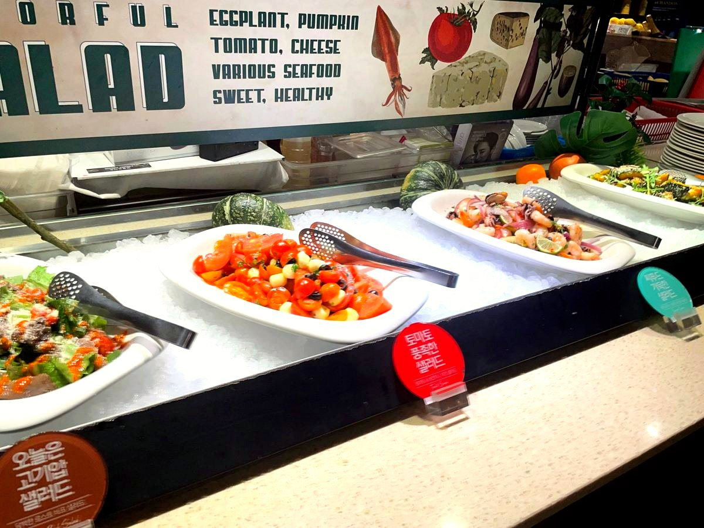
팔라 피자와 타르틴 등 델리 메뉴를 매장별로 같은 맛과 모양으로 내는 일을 했습니다.
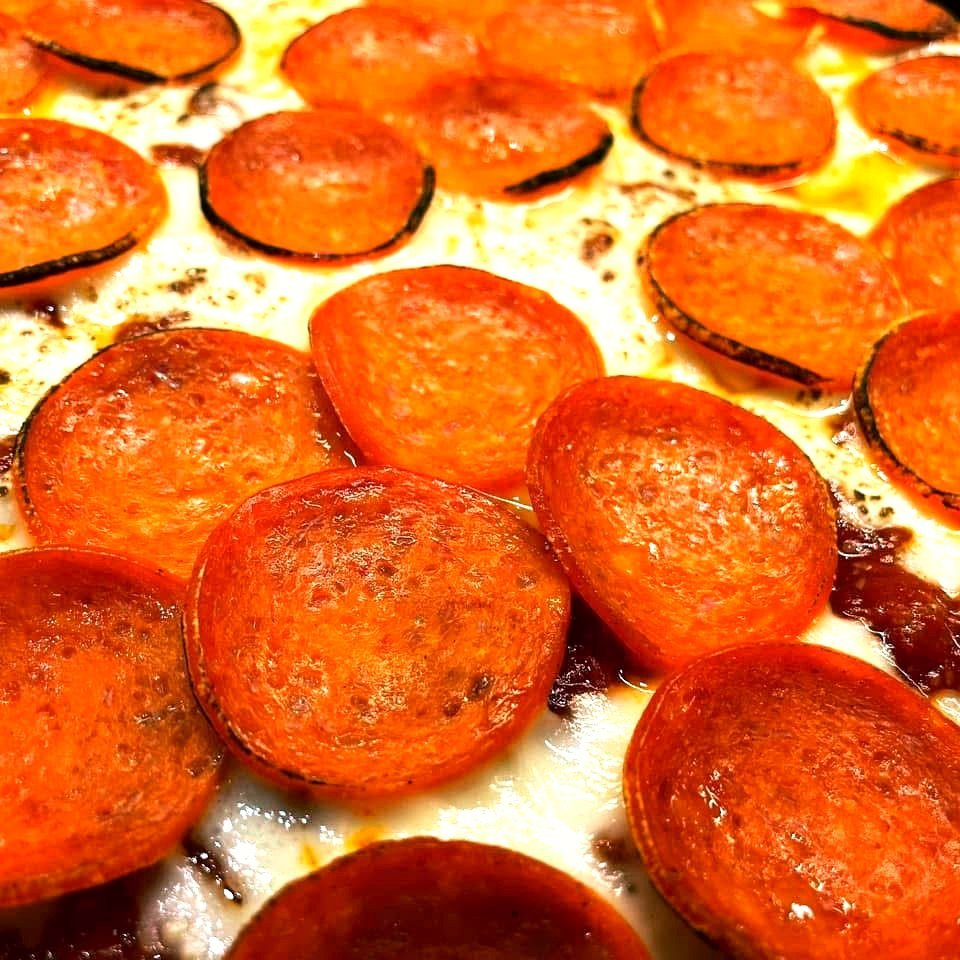
육수와 면, 고명 하나까지 정해진 기준을 지키는 냉면 주방에서 일했습니다. 이 경험은 지금 냉면 레시피 자문으로 이어지고 있습니다.
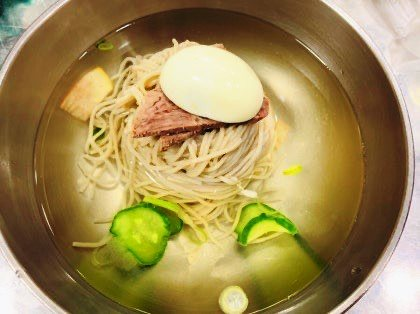
파스타와 떡볶이 메뉴를 설계했고, 맛집 앱 지역 순위 상위권과 CJ오쇼핑 방송 노출까지 이어졌습니다. ‘방카 떡볶이’와 ‘LE FROMAGE BY BANGKA’는 상표로 등록되어 있습니다.
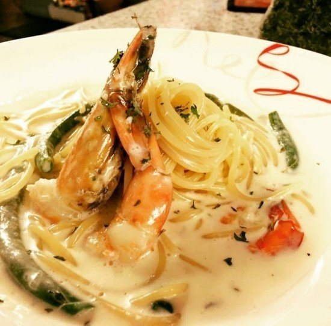
이탈리안 주방에서 스타지로 기본기를 다졌고, 파스타 매장을 직접 운영하며 매출과 운영을 몸으로 겪었습니다.
20년 동안 쌓은 현장 경험을 사장님 가게에 그대로 옮기는 회사를 만들었습니다. 현재 8명의 수퍼바이저와 함께 기업과 개인 사장님을 전국에서 지원합니다.
메뉴 디렉팅을 맡은 매장의 실제 순위와 방송 화면입니다.
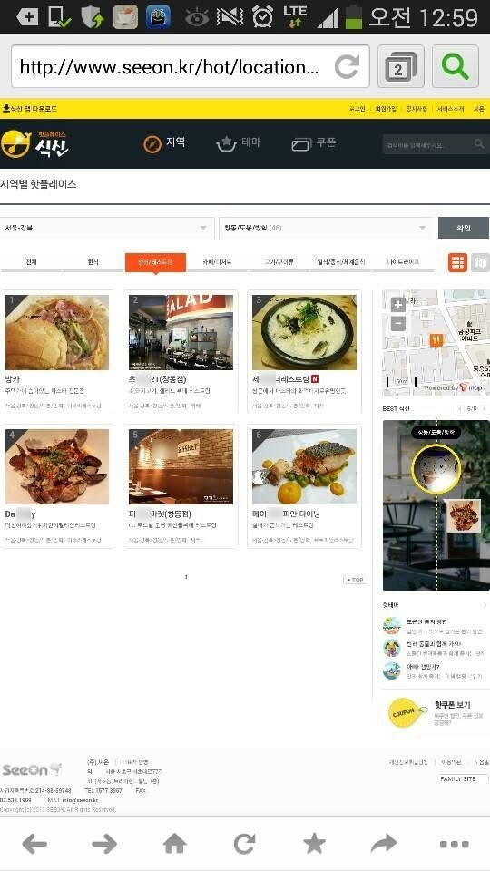
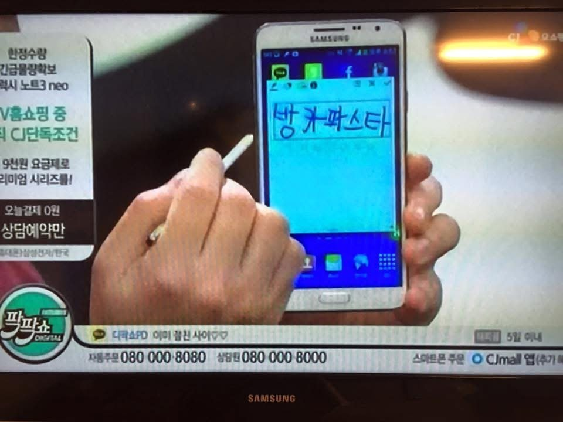
양식조리기능사 · 직업능력개발훈련교사(조리 3급) · NCS강사 · 교원자격증 · 아동요리지도사
장르와 규모를 가리지 않고 주방에서 직접 조리한 사진입니다.
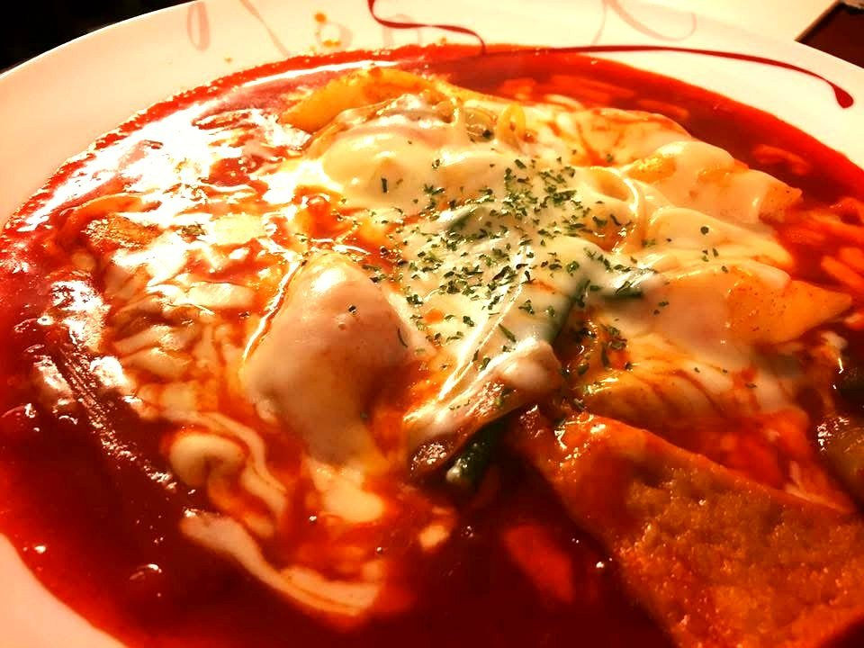
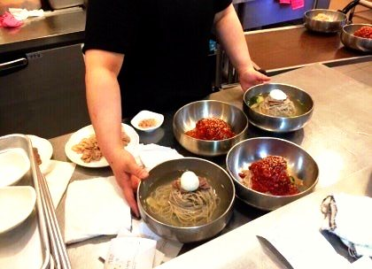
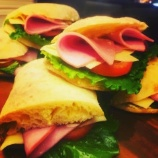
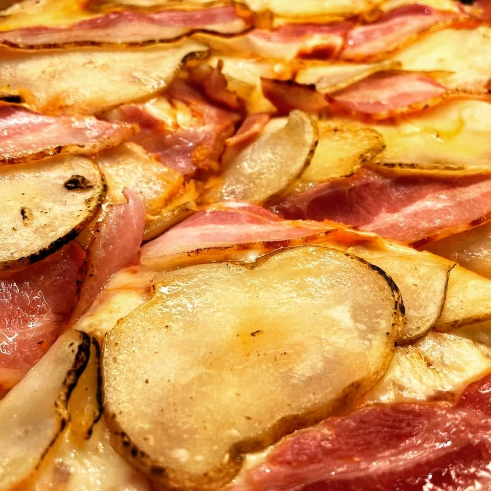
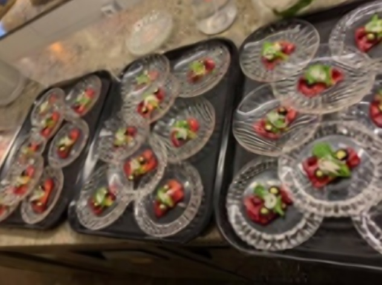
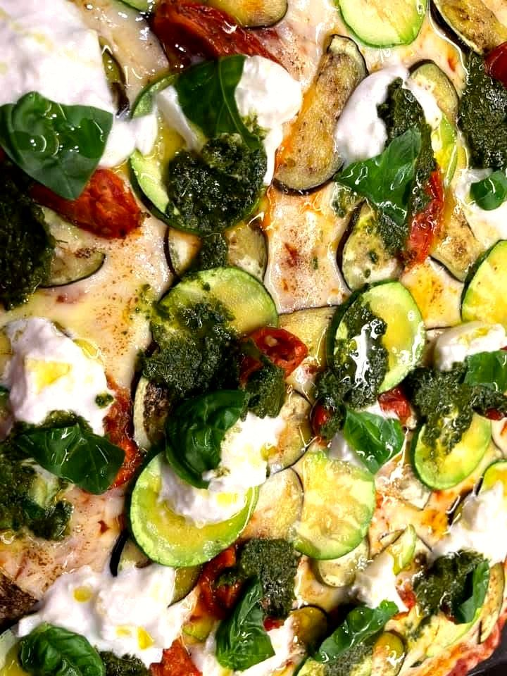
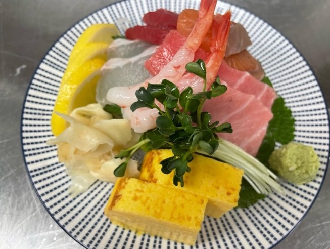
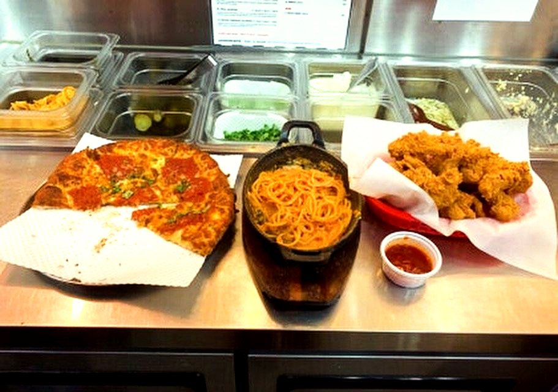
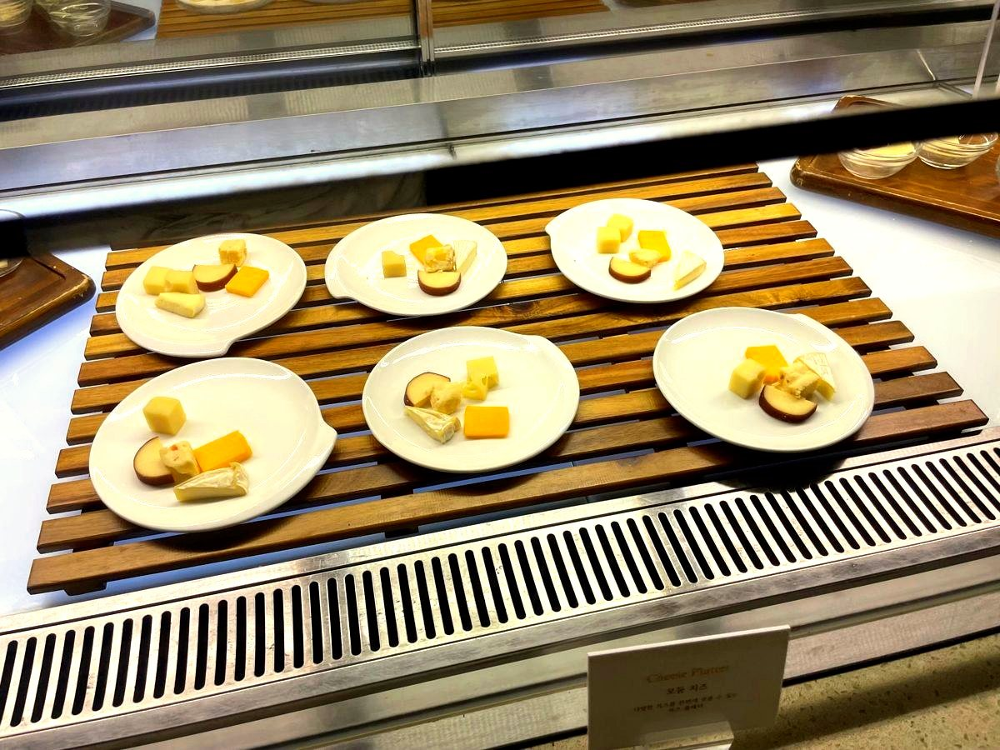